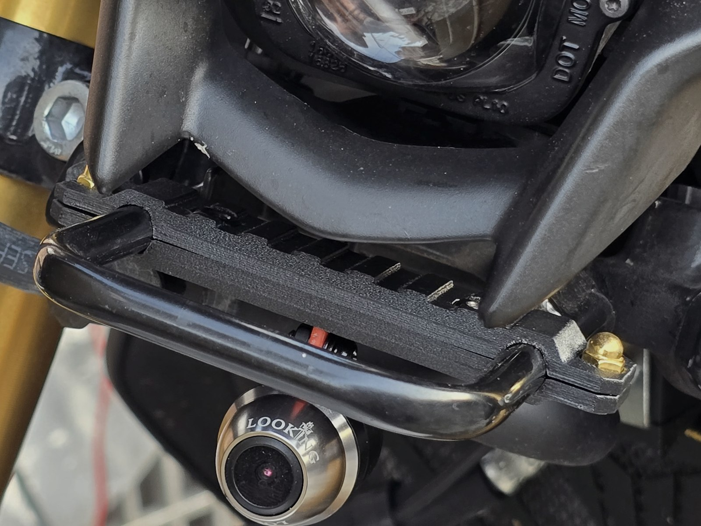
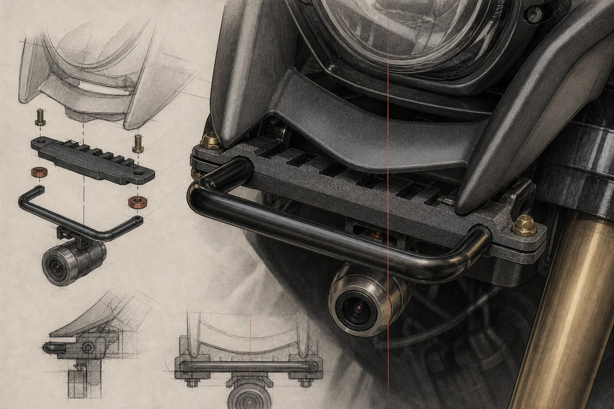

MT-15 行車紀錄器置中支架MT-15 Camera Mount
為 Yamaha MT-15 設計的行車紀錄器鏡頭支架，解決鏡頭安裝位置與視覺置中的問題。

Category機構零件與實車驗證
Year2025
Status可公開案例
01 — CHALLENGE
需求與限制
需要配合實車空間、既有安裝點、鏡頭視角與日常使用環境，不能只以外觀判斷。
02 — SCOPE
負責範圍
- 實車條件量測
- 支架建模
- 3D 列印
- 安裝與使用驗證
03 — PROCESS
從需求到可確認成果
- 01
實車條件
確認車頭可用空間、既有安裝位置與鏡頭置中需求。
- 02
支架建模
依實車限制建立支架模型與固定位置。
- 03
實體製作
以 3D 列印製作支架，進入實車裝配。
- 04
使用驗證
完成安裝並以日常使用確認鏡頭位置與支架狀態。
04 — RESULT
目前可確認的成果
完成實車安裝並持續使用，鏡頭位置維持置中。
05 — GALLERY
設計語境補充
主要實際素材已於上方呈現。以下 AI 圖只用於補充設計與工作語境，不作為實際交付成果證據。

!待補內容REVIEW PLACEHOLDER
後續將補入支架模型、列印件細節與安裝條件說明。